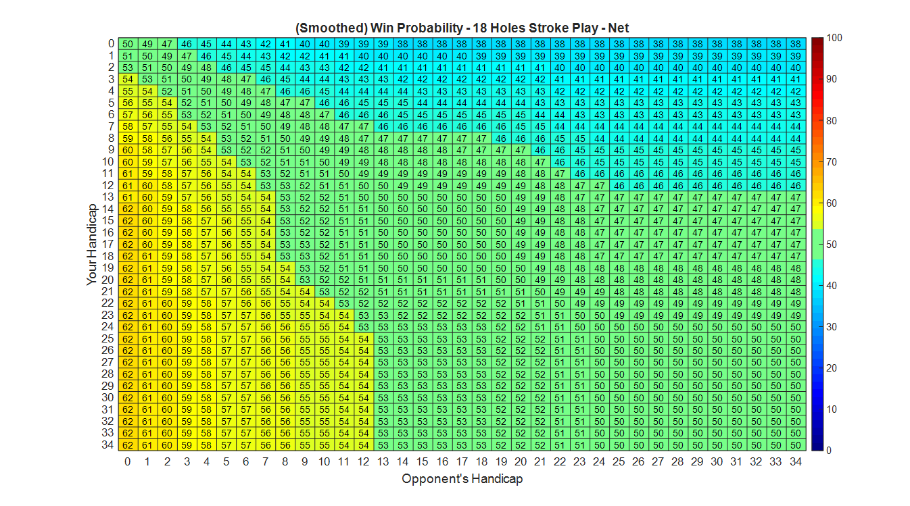
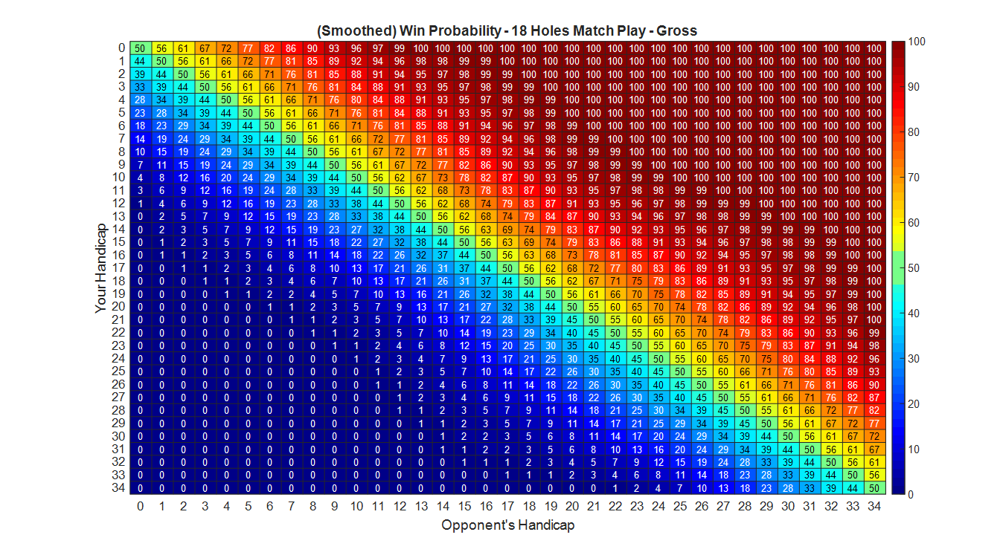
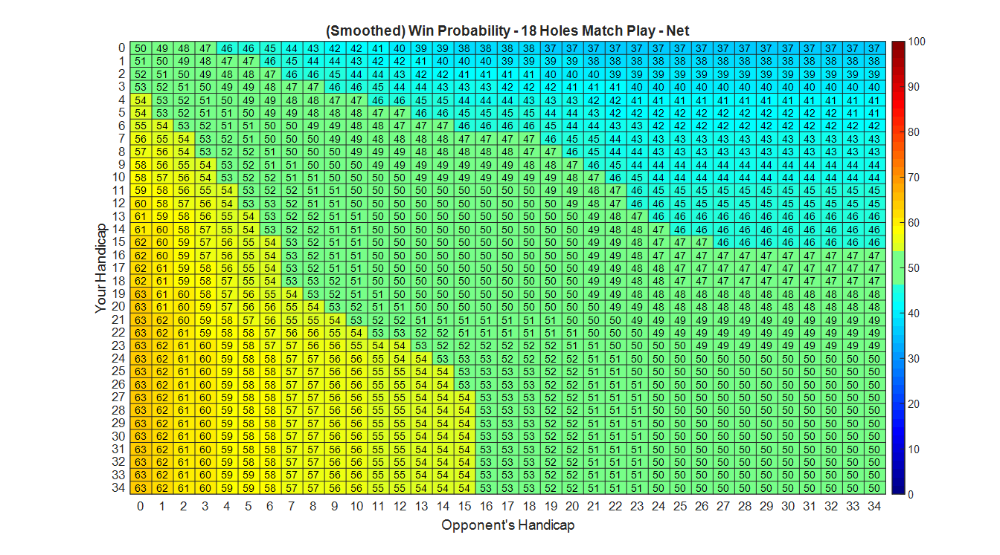
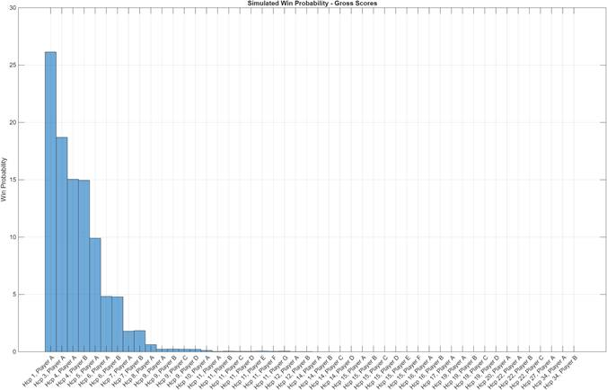
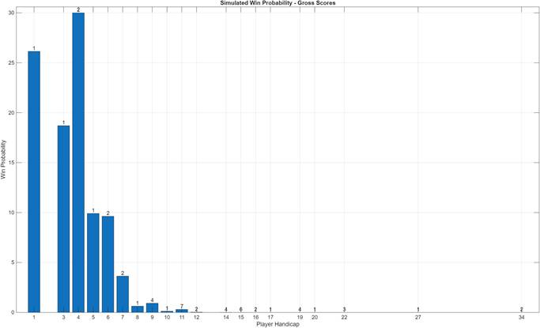
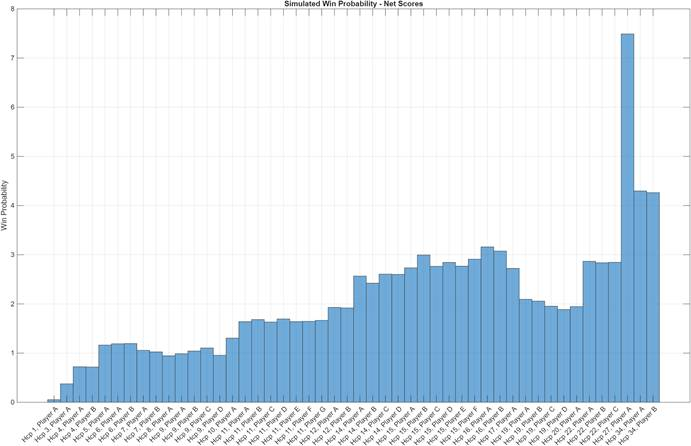
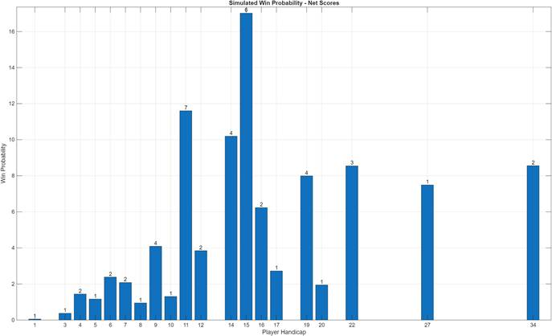

How Does Your Handicap Affect Your Chances of Winning a Match?
One of the important features of golf is its use of a handicapping system, enabling players of different skill levels to compete against each other, nominally on a level playing field. Our handicap is the core indictor by which our golfing ability is measured, and "What do you play off?" is often one of the first questions asked when golfers first begin playing against each other.
Fortunately, all members of the Salt Spring Golf Club have access to the Golf Canada Scoring portal, where hole scores can (and should) be entered after every round played. The portal contains a wealth of information on the World Golf Handicap System, including how your entered scores get combined to calculate your scoring index, and how that is used to calculate your handicap on any course world wide, including when you play competitively on our course.
There are 4 competitive formats that we commonly play:
1. gross stroke play
2. net stroke play
3. gross match play
4. net match play.
Handicap comes into play for net formats (where your handicap is deducted from your total score to give a net-score,) but not gross formats (where your handicap is not deducted from your total score.) In stroke play, your total number of strokes taken over the full 18 holes is considered; while in match play, holes are won on a hole-by-hole basis, and the player with the most holes won wins the overall match.
Colloquially low-handicappers often muse – some might say complain -- that it's not worth their while playing in net competitions because high-handicappers always win. Conversely, and perhaps more understandably, high-handicappers are reluctant to enter gross competitions because they are most likely going to be won by a low-handicapper.
But does the data support these commonly held beliefs? If the handicapping system is working to its ideal, then for net competitions, where the playing field is levelled by the use of handicaps, every golfer should have an equal chance of winning.
In this article, data from rounds played on our course are used to simulate all four of the competition types above. From these simulations conclusions are drawn regarding the effectiveness of the handicapping system as it applies to our course.
Methodology
The analysis performed here uses actual hole scores submitted by members through the Golf Canada score entry portal for 2021 to 2025. If you entered either a 9-hole or 18-hole score during that time period then it is used as part of this analysis – with a minor caveat that you must have entered at least ten 9-hole round scores.
The data is split by the handicap of the player at the beginning of their round, into different sets. One set of data is created for those off scratch (i.e. having a handicap of 0,) and another set of data is created for those with a handicap of 1, and another set for those with a handicap of 2, etc., all the way up to a handicap of 34. (Currently the analysis is only performed for Men playing off the White/Blue tees, and this is the range of handicaps that we have at the club.) Each set contains actual scores for all players with that handicap. Scores for both the front and back nine are used.
Effectively each set represents the hole scores of a typical player with the given handicap.
The image below shows the number of rounds played for players in each set. For example, there have been a little over 1000 rounds played by golfers with a handicap of 13.

Not unexpectedly, players with a handicap from 7 to 23 play the most rounds, while there are few rounds played by players with very low and very high handicaps. This means that any conclusions drawn from the data are likely to be more accurate for the players with handicap of 7 to 23 than for those on the extremes.
Using a sampling/bootstrapping technique, each set of data is used to simulate players with the given handicap. For each handicap, 10000 18-hole rounds are simulated.
Using the simulated scores, it is possible to determine the win probability of a player with handicap X playing against another player with handicap Y. This win probability is calculated for all four of the common competition formats being considered: gross stroke play; net stroke play; gross match play; and net match play.
In each of the sections below the win probability is displayed using a type of visualization called a heatmap. The x-axis and y-axis represent player handicaps. The number in each cell is the probability that a player with a given handicap X will win a match against another player with handicap Y. For instance, if a cell contains the number 50 then it means player X has a 50% probability of winning a match against player Y. Similarly, a value of 25 indicates that player X has a 25% chance of winning, and a value of 75 says that they have a 75% chance of winning. The background color makes it easy to see regions where player X has similar win probabilities against other players.
The heatmap can be used in the following way: Down the left-hand side look for your handicap. Across the lower edge, look for the handicap of your opponent. The number in the cell where your row intersects your opponent’s column gives your win probably against that opponent. For example, if your handicap is 18, and your opponents handicap is also 18, then you have a 50% chance of winning your match. However, if you are playing a gross stroke play event, and your opponent has a handicap of 23 then your probability of winning the match rises to 77%.
Since the data is quite noisy - especially for the low and high handicappers where there is the least data - a smoothing has been applied so that the win probabilities increase/decrease monotonically across the heatmaps.
Win Probability - 18 Holes Stroke Play - Gross
Assuming an 18-hole stroke play event is being played, and handicaps are not being used, then the figure below shows the win probabilities.
Since this event type does not use handicaps, it is expected that any player with handicap X is expected to win over a player with handicap Y when X < Y. That is, the player with the smaller handicap – the better player – is expected to win. This is borne out by the numbers to the top right being greater than 50, while the numbers to the lower left are less than 50.
As a specific example, a player with a handicap of 0 is almost certainly going to win over any player with a handicap of 12 or greater. And they have a greater than 66% chance of beating a player with a handicap as low as 3.
This confirms that in a gross stroke play event players with the lowest handicap are most likely to win. (Of course this doesn’t mean that they will win, merely that they have a high probability of winning.)

Win Probability - 18 Holes Stroke Play - Net
But what happens in an 18-hole stroke play event when handicaps are being used - i.e. net scoring is used. The win probabilities for this type of event are shown below.
If the handicap system was perfect then we should expect every cell to have the value 50 in it. (Or given the noise in the data, a value close to 50.) That is, when handicaps are considered, every player should have a 50% chance of beating any other player.
That is clearly not the case. High handicappers are more likely to win a net stroke play event than a low handicapper is. Heuristically this can be expected as it is easier for a high handicapper to have a great day out and beat their handicap by say 10 strokes, than it is for a scratch (or low) handicapper to beat their handicap by 10 shots by shooting a 62.
This data reinforces the perception of low handicappers that it is not worth their while entering net events. However, except at the extremes, the advantage is small, and a recent net events at our club has been won by a player with one of the lowest handicaps in the field.

Win Probability - 18 Holes Match Play - Gross
Now let's take a look at match play events. These are scored on a hole-by-hole basis, with the winner being the player who wins the most holes.
When handicaps are not being used -- i.e. a gross score event -- win probabilities for this type of event are shown below.
This heatmap is very similar to the one for gross stroke play events. Low handicap players are expected to far out perform high handicap players.

Win Probability - 18 Holes Match Play - Net
The final competition type to analyse is net match play. Since handicaps are used, if the handicap system was perfect then all players would be expected to have a 50% probability of winning. The heatmap below shows that that is not the case universally, however for large regions of handicaps it is the case.
Very low handicappers appear to be at a disadvantage. However, mid and high handicappers have a win probably near 50% when playing someone within 8 to 9 handicap strokes from them. And even when playing someone with a vastly different handicap, most golfers have a reasonable chance of winning a net match play event.

Multi-player Competitions
The above results are all premised on events being one-on-one. However, since many of our trophy events involve multiple players, it is sensible to then ask how does win probability change when there are multiple players in a field, with some having the same handicap?
The answer depends on how many players there are in the field with any given handicap. An extreme example would be to consider a stroke play event with 100 players in the field, where one player has a handicap of X, and the other 99 players have a handicap of X+1. Since the players all have similar handicaps, they will each have approximately the same probability of winning. However, since there are 99 players with a handicap of X+1, the probability that a player who has a handicap of X+1 winning the event is far higher than the probability of the single player with a handicap of X being the winner.
As a more concrete example, consider the 2025 Men’s Club Championship. Played over 2 days, this is a 36-hole stroke play event and in 2025 there were 48 players in the field. Two events are played simultaneously – there is a trophy for lowest gross score, and another trophy for lowest net score. For simplicity, here we assume that all players play in both events (whereas often some players choose to play for only one of the two trophies.)
The player’s handicaps ranged from 1 to 34. But there are two critical things to realize: firstly, there are multiple players with the same handicap; and secondly there are some handicaps that nobody in the field has.
The Gross Score Event
The figure below shows the win probabilities for players in the gross scoring event. Since this is a gross event, handicaps do not factor into the result, and hence the low handicap players are most likely to win.
In the left image, each blue column indicates the win probability of that player. There are 48 columns – one for each player. Note that multiple players have the same handicap (e.g. two players have a handicap of 4, and seven players have a handicap of 11.) This image shows the win probability of any given player in the field. This data bares out the assumption that a low handicap player is likely to win the gross score event.
In the right image, the win probability of players with the same handicap are grouped together. The x-axis represents the handicaps of the players. The height of any of the blue bars represents the probability that a player with that handicap will win the event. The number at the top of the bar indicates the number of players with that handicap.
For instance, there is a single player with a handicap of 1, and they have a win probability of approximately 26%. There are two players with a handicap of 4, and they each have a win probability of approximately 15%. This means that the probability that the winning player has a handicap of 4 is approximately 30%.
Note that the Gross Championship in 2025 was won by one of the players with a handicap of 6, who was 6 strokes better over the 36 holes than the player with a handicap of 1, who came in second. (Noting again that for the gross scoring event handicap does not factor into the result. They were simply the best player over the 36 holes, even though they nominally only had a 5% chance of winning.)
|
 |
 |
The Net Score Event
The figure below shows the win probabilities for players in the net scoring event. Since this is a net event, handicaps do factor into the result, and at least conceptually, if all players have the correct handicap, then all players have the same probability of winning.
In the left image, each blue column indicates the win probability of that player. There are 48 columns – one for each player. Again, note that multiple players have the same handicap (e.g. two players have a handicap of 4, and seven players have a handicap of 11.) This image shows the win probability of any given player in the field. This data indicates that the handicapping system is not optimal, and that mid to high handicappers are more likely to win – albeit their advantage is generally small, and may be within the margin of error. (As discussed earlier, there are very few rounds for both very low, and very high handicappers, so there is less certainty about their win probabilities. It is possible that with more data the win probability of the low handicappers would rise, and the win probability of the high handicappers may fall. This low number of rounds issue is most likely the reason why the win probability of the player with a handicap of 27 is abnormally high.)
In the right image, the win probability of players with the same handicap are grouped together. The x-axis represents the handicaps of the players. The height of any of the blue bars represents the probability that a player with that handicap will win the event. The number at the top of the bar indicates the number of players with that handicap.
For instance, each player who has a handicap of 11 has approximately a 1.7% chance of winning. However, there are 7 players with this handicap, so the probability that the winner has a handicap of 11 is approximately 11.5%. Similarly, there are 6 players with a handicap of 15 and they each have approximately a 2.8% of winning. However, the probability that the winner has a handicap of 15 is approximately 17%.
There are two things to note about these plots: firstly, that each player does not have an equal probability of winning – this suggests that the players do not have a correct handicap; and secondly, there is a high probability that the winner comes from one of the mid-handicappers.
Note that the Net Championship in 2025 was won by one of the players with a handicap of 11, who was 2 strokes better over the 36 holes than one of the players with a handicap of 6, who came in second.
|
 |
 |
Conclusions
The analysis performed here confirms most players understanding of who is more likely to win events when different scoring formats are used. Specifically, low handicappers have a considerable advantage in gross events, where as high handicappers have an advantage in net events. This holds for both stroke play and match play events.
However, as noted in the Methodology section, there are very few rounds for low handicap players (or for high handicap players,) and hence the results for them aren't as certain as for mid-handicappers.
Mid-handicappers are at less of a disadvantage than low handicap players, and for a wide range of opponents have a reasonable chance of winning match play events. They must be playing someone with a handicap at least 8 or 9 strokes higher than their own handicap before seeing a noticeable drop in their probability of winning a match.
Since high handicappers have a higher chance of shooting a score that is much lower than their handicap, it is commonly thought that they are perhaps unfairly advantaged in match play events. However, the data shows that they need to be 12-18 handicap strokes higher than their opponent before seeing a perceptible advantage.